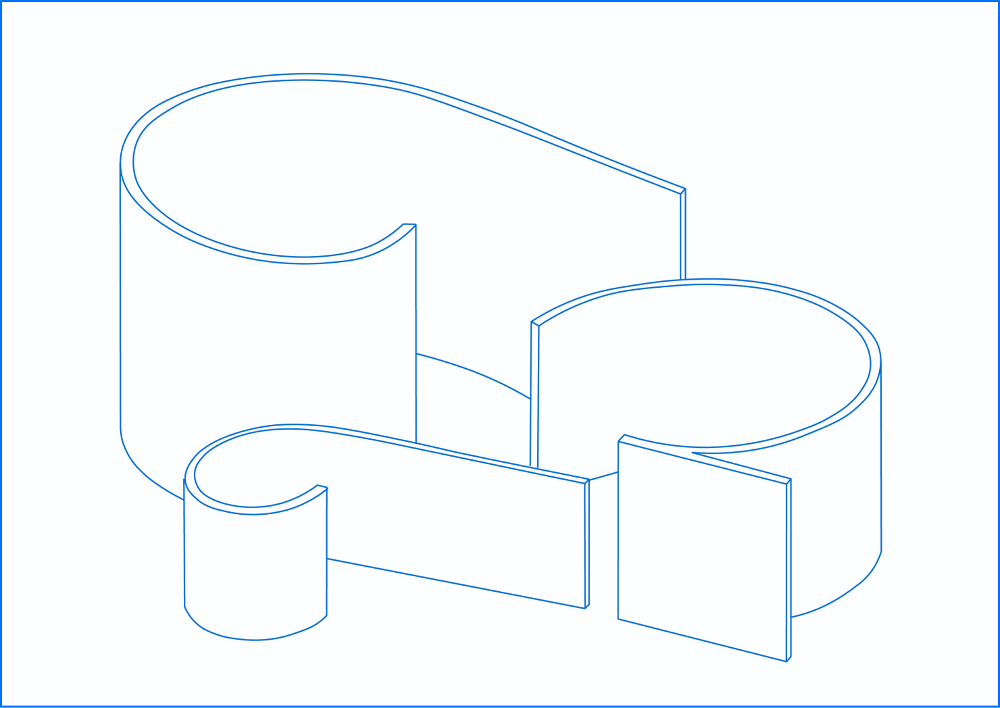

BASS-SPOT — это многофункциональное пространство для отдыха и сна,
сопровождающееся музыкой в исполнении бас-гитары. Площадка является арт
-средой и музыкальной студией для самовыражения музыкантов и творческих
коллективов. Главной целью проекта является создание благоустроенной среды
для реализации музыкальных ивентов: лекций, концертов, музыкальных практик
и зон отдыха.
